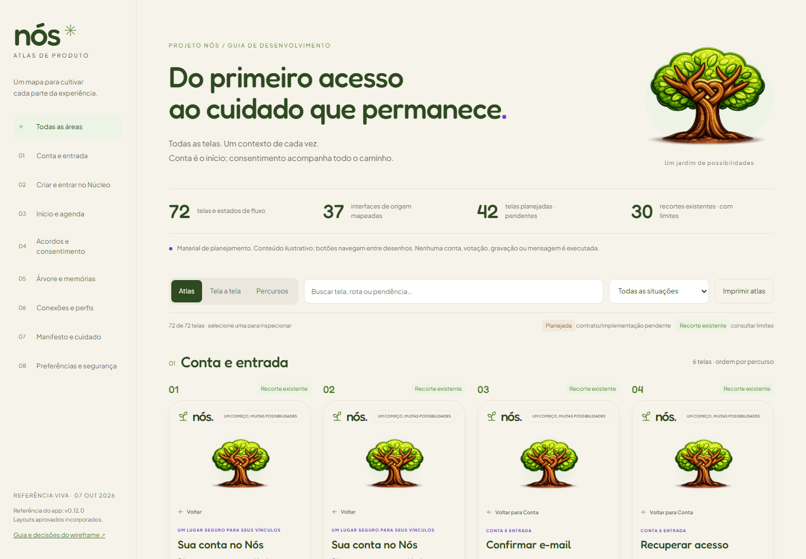
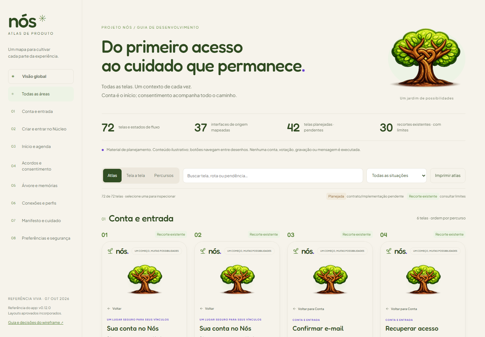
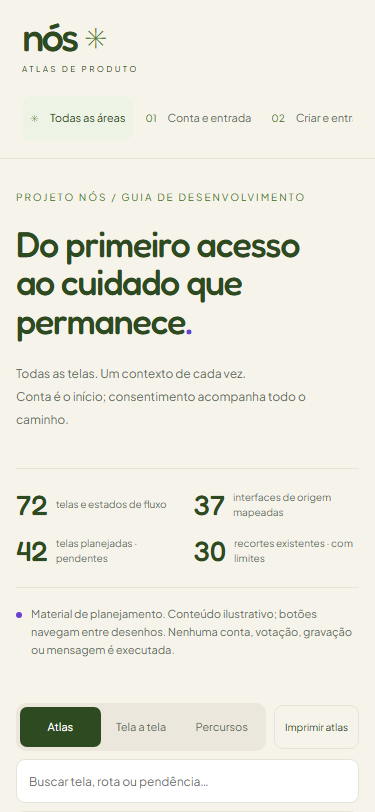
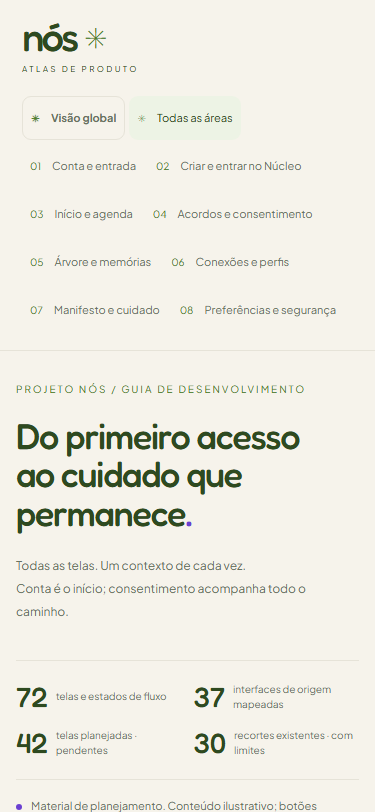
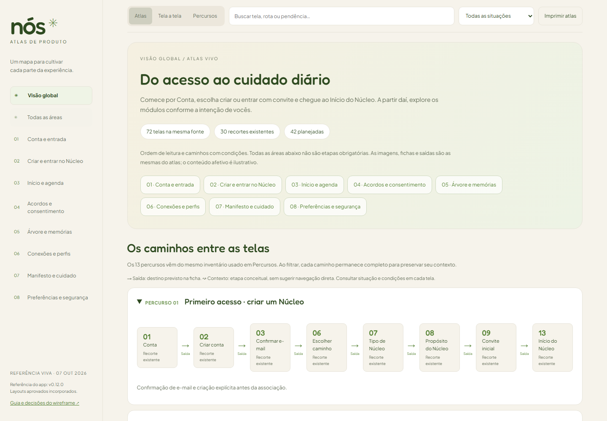
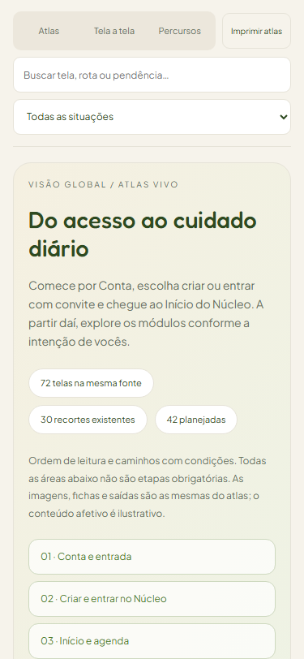

PROJETO NÓS · v0.12.0 · 2026-10-07
Visão global: sequência e ramificações compartilhadas
A nova aba aparece acima de Todas as áreas. Conta inicia a leitura; criação e convite são alternativas. O Início do Núcleo dá acesso aos módulos conforme a intenção. Os 13 percursos e as 72 composições são reaproveitados; situações, pendências e saídas vêm das fichas existentes.
Não havia uma Visão global anterior. As capturas anteriores mostram Todas as áreas na base 7a1fedc; as atuais mostram a nova visão e a navegação existente atualizada. Esta entrega altera a ferramenta de documentação. As rotas do aplicativo não foram alteradas; não há tela equivalente do produto a capturar.
Verificação: 72 composições iguais entre visões; título, dependência, ação e tela acrescentada propagados pela mesma fonte; navegação por teclado, busca/situação ao alternar visões, endereço direto, celular e impressão. “Saída” significa destino na ficha; “Contexto” não sugere botão direto. Permanecem 30 recortes existentes e 42 planejadas.
Abrir Visão global · Índice de comparações · Comparação de Conta com o aplicativo
Navegação por áreas — antes e depois
Antes · web


Depois · web


Antes · celular


Depois · celular


Nova tela — Visão global
Web · 1440 × 1000


Celular · 375 × 812


As imagens preservam esta entrega. A referência corrente permanece no Atlas vivo, que continua sendo atualizado com o produto. Capturas são locais e não executam cadastro, votação, envio ou gravação.